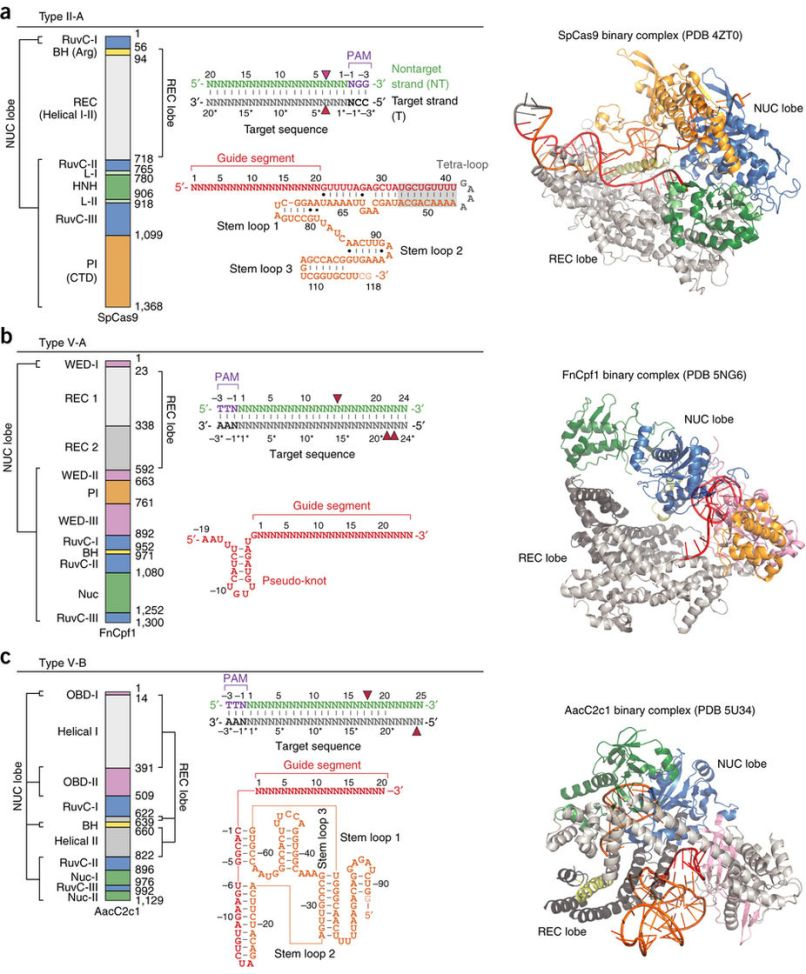

A veces no necesitamos modelar una interfaz molecular, pero sí comprenderla, para diseñar experimentos. Esto ocurre con las endonucleasas CRISPR-Cas, herramientas de edición genómica en principio más sencillas de emplear que las proteínas TALEN o las endonucleasas fusionadas con dominios Zinc Finger (ZFN).

|
Estos sistemas se han usado, por ejemplo, para inducir mutaciones heredables en loci seleccionados de plantas, incluso en especies poliploides como el trigo panadero (Lawrenson et al., 2015; Wang et al., 2014). Para ello es preciso hacer análisis de secuencias con el fin de elegir las secuencias adecuadas, normalmente únicas en el genoma. En el caso de las endonucleasas Cas, polipéptidos de más de 1000 aminoácidos, las secuencias diana deben elegirse respetando la arquitectura de la interfaz entre proteína, DNA y RNA, que requiere un motivo de entre 3 y 5b adyacente a la diana, llamado PAM ( protospacer adjacent motif ). Además de la estructura de estos complejos, normalmente es necesario determinar experimentalmente in vitro e in vivo la tasa de cortes no deseados o qué partes del RNA guía más sensibles en la hibridación (Zheng et al., 2017; Cisse et al., 2012). Se han empleado asimismo modelos de dinámica molecular para estudiar la mecánica de estos complejos (Zheng, 2017).
|

|